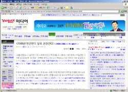
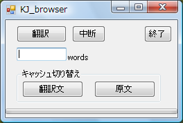

KJ_dictのライブラリ(KJ_dict.dll)を使えば，こんな事もできるという例として作ったものです。
・IE8では動きません。(落ちます)
Internet Explorer上の韓国語のページを翻訳するプログラムです。
Yahoo Korea IT Newsページに対して使ってみた例。

なお、対象OSはWindows XP, Vistaのみです。
それ以外ではフォントが大きく乱れます。
・IE7では動作します。
Vista＋IE7では保護モード:無効→有効の切り替わりで別ウィンドに変わるため、うまく翻訳できません。
Windows VistaでKJ_browserを使いたいという方は以下の回避策をお試しください。
・KJ_browserで翻訳したいサイトを「信頼済みサイト」に登録する。
ただし、本当に信頼できるサイトに限ってください。
「信頼済みサイト」は「保護モード:無効」で動作するからです．．．
KJ_browser.exe を実行すると Internet Explorerと下図の小さな
ウィンドが上がります。

Internet Explorerで翻訳したい韓国のサイトへ移動し、[翻訳] ボタンを押してください。
結構、時間かかります。
途中で止めたい場合は、[中断]
完全に終了させる場合は、[終了] を押してください。
[終了] の場合、同時にあげたIEも終了します。
ブラウザでページを戻った場合、再度原文が表示されます。
一度翻訳したページはメモリ中に覚えているので、
"キャッシュ切り替え"の中の [翻訳文] を押すと、前のページに戻って、
再度翻訳文を表示させる事ができます。
[原文]を押すと元に戻ります。
翻訳できるのは最初に上がったウィンドだけです。
最初のウィンドから別ウィンドで開いた部分は翻訳できません。
ScriptやActiveXなどがあるサイトではうまく動作しない事があります
フレームの中に本文が入っている場合もだめです。
翻訳文の方はあいかわらずなので、
翻訳結果を信用して間違った情報を身につけた、なんて苦情は一切受け付けません。 (^^;
普通、使う必要はありませんが、パネル上部で右クリックすると
[ 拡張機能 ] が選べ、別ダイアログでいくつかの設定変更ができます。
設定変更の詳細
・辞書引きの情報はキャッシュに保存します。
最初の1,2回は翻訳速度が遅いですが、翻訳を繰り返すと速くなっていきます。
(プログラムを終了するとキャッシュは破棄)
{kind=link}
{kind=link}